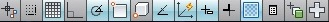
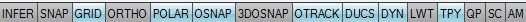
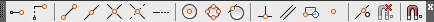
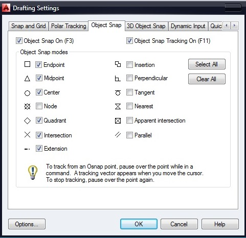
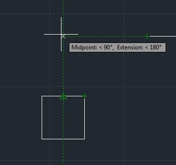
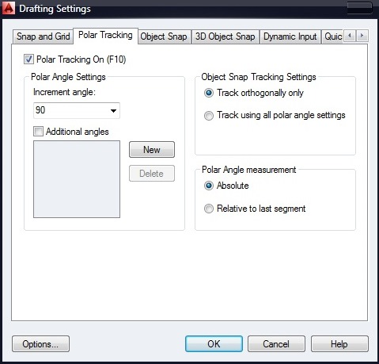
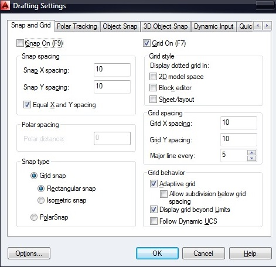

Лекция 3: Режимы. Использование объектной привязки, объектного отслеживания и сетки
В предыдущем уроке мы рассматривали системы координат AutoCAD, а так же методы ввода команд и координат. Для быстрого и эффективного построения чертежей в системе AutoCAD применяются специальные режимы, использованию которых посвящен данный урок.
Режимы
Режимы являются дополнительным средством черчения, способствующие упрощению и ускорению процесса создания чертежей.
Как было описано в уроке, посвященном интерфейсу среды AutoCAD, панель режимов расположена в строке состояния и отображается либо графически в виде пиктограмм, либо в текстовом режиме. Включается и отключается режим нажатием ЛКМ по пиктограмме (имени).
Отображение пиктограммами
Отображение текстом
Основные рабочие режимы:
SNAP – при включенном режиме значение координат при перемещении курсора изменяется дискретно с определенным, установленным шагом.
GRID – при включенном режиме в зоне лимитов чертежа отображаются линии сетки, шаг которых можно настроить и который не обязательно совпадает с шагом режима SNAP.
ORTHO – при включенном режиме все сегменты чертежа строятся прямолинейно, направленные строго вертикально или горизонтально.
POLAR – режим расширенного режима ORTHO, позволяющий настроить значение угла. OSNAP – режим включает и отключает выбранные функции объектной привязки.
OTRACK – режим включает функцию объектного отслеживания.
LWT – режим Lineweight отображает вес элементов чертежа, то есть ширину линий, с которыми чертеж выводится на устройство печати.
Объектная привязка
При работе с чертежом можно включать и отключать режимы, что упрощает построение. Одним из таких режимов является режим объектной привязки, который позволяет связывать точки создаваемого объекта с точками ранее построенного. Точками привязки могут быть конечные или центральные точки объектов, точки явного или предусмотренного пересечения и т.д. Указание необходимых точек происходит без определения их координат. При включенном режиме объектной привязки необходимо выбрать способ привязки и поместить курсор вблизи объекта. Координаты необходимой точки будут определены автоматически.
Объектная привязка используется при выполнении операций построения и редактирования в ответ на запрос программы указать следующую точку.
Выбор режима привязки осуществляется таким способом:
1.Выбрать режим, нажав на панели Object Snap соответствующую кнопку. Для вызова панели используйте контекстное меню любой панели инструментов расположенных на экране.
2.Ввести в командной строке первые три буквы названия режима в ответ на запрос системы указать точку.
3.Выбрать режим привязки на вкладке Object Snap диалогового окна Drafting Settings. Для вызова окна нажмите ПКМ, удерживая при этом зажатой клавишу Shift.
Значение параметров объектной привязки:
Endpoint – определение координат конечных точек объектов.
Midpoint – определение координат средних точек объектов.
Center – определение координат точек центра круга, эллипса или дуги.
Node – определение координат точечных объектов.
Quadrant – определение координат квадрантных точек – точек пересечения координатных осей с кругом, эллипсом или дугой.
Intersection – определение координат точек пересечения объектов.
Extension – определение координаты точки на прогнозируемом продолжении линий и дуг.
Insertion – определение координат точек вставки текста, формы.
Perpendicular – определение координат точки объекта, которая находится на нормали к выбранному объекту.
Tangent – определение координат точки на окружности или дуге, которая при соединении с заданной точкой создает касательную к выбранному объекту.
Nearest – определение координат ближайшей точки на объекте, к позиции курсора.
Apparent intersection – определение координат точки воображаемого пересечения линий.
Parallel – определение координат точки, которая при соединении с выбранной точкой создает линию, параллельную выбранному отрезку.
Объектное отслеживание
Режим Object Snap Tracking используется совместно с режимом объектной привязки. При включенном режиме объектного отслеживания – точному позиционированию очередной точки помогают тонкие пунктирные линии, которые пересекают объект в точках привязки – линии трассирования. Этот режим расширяет и дополняет возможности объектной привязки, позволяет задать точное положение объектов относительно друг друга. Обеспечивается соблюдением точных геометрических построений без предварительного построения вспомогательных линий. Режим генерирует любое количество линий трассирования на основании любого количества точек и параметров объектной привязки.
Для режима объектного отслеживания можно задавать генерирование только ортогональных линий, включив режим ORTHO или генерирование линий под углами, кратными стандартным значениям: 90о, 45о, 30о, 22.5о, 18о, 15о, 10о, 5о. В данном случае работает режим полярного отслеживания POLAR. В случаи необходимости можно определить так же другое значения углов. Соответствующие настройки задаются в окне Drafting Settings на вкладке Polar Tracking.
Сетка
Создавая чертеж в области XY, для использования позиционирования объектов и удобства их построения можно включить отображение сетки, включив режим GRID. В области лимитов чертежа по вертикали и горизонтали отобразятся линии сетки, размещенные через заданные интервалы. Расстояние между линиями сетки по умолчанию равно 10 единицам измерения. Шаг линий сетки задается в окне Drafting Settings на вкладке Snap and Grid.
На этом урок по изучению режимов и их использованию закончен. Следует отметить что в данном уроке были рассмотрены основные, базовые режимы. Что касается остальных, они будут рассмотрены в последующих уроках. Следующий урок, будет посвящен изучению методов просмотра чертежа и видовым экранам.